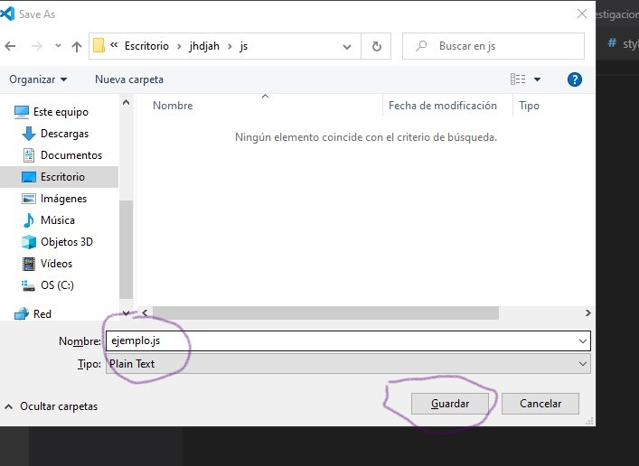
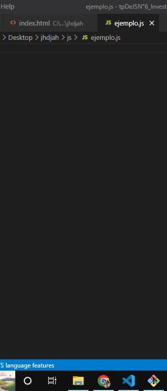
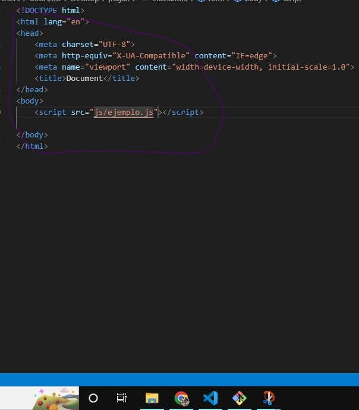
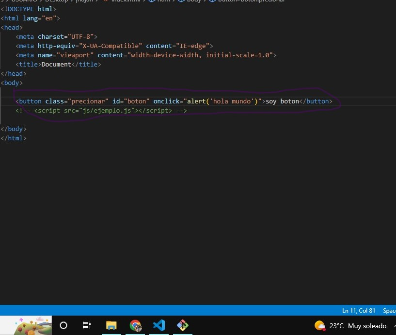
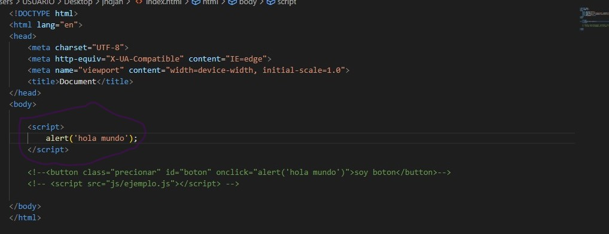

Preguntas:
1) ¿Qué versiones de JavaScript hay en el mercado?.
2) ¿Cómo se integra JavaScript a HTML?.
3) ¿Cómo es el manejo de las variables, tipos de datos y expresiones regulares en JS?.
4) ¿Cómo son todas las formas de declaración de funciones en JS?.
5) ¿Cuáles son los operadores y conversión entre tipos?.
6) ¿Cuáles son las estructura de control de JS?.
7) ¿Qué es el objeto dom en JS? Y ¿Cómo trabaja?.
8) ¿Qué función tiene en JS el Object Map?.
9) ¿Cuáles son todos los eventos que trabaja JS?.
10) Con toda la investigación que generaron deben de generar un formulario que realice las
siguientes funciones.
a. ¿Qué obtenga los datos del input?.
b. ¿Qué verifique los datos que se ingresan en el input?.
c. ¿Qué el formulario presente una calculo de sumatoria para validar ¿Qué no sos
un robot”?.
Respuestas:
1)
2) Para integrar JavaScript a HTML existen tres formas para hacerlo una de las formas seria:
a)Hacer un nuevo documento en la carpeta donde tenes el index y style, este documento tiene que llevar el nombre que quieras
un ejemplo seria "nuevodocum.js" es importante que diga js si no, no se va a crear y despues en el index dentro de body tenes
que poner "script src"nuevodocum.js".
ejemplo de como seria:



b)Para hacer la segunda inserccion de js en html seria que en una etiqueta tienes que poner en la etiqueta "onclick" = "alert"
y lo que quieras poner un ejemplo seria Hola mundo.

c)Para la ultima inserccion lo que hay que hacer es que dentro del html tenes que poner "script" "/script" y dentro del script
tenes que poner el codigo que quieras o el mensaje.

3) Manejo de variables en JS:
Las variables se pueden declarar usando var, const o let. Var tiene alcance de funciones, mientas que const y let tiene alcance
de bloque, las variables de const no pueden ser reasignada, mientas que la variables let si pueden reasignada.
Manejo de tipos de datos en JS:
En JS existen 7 tipos de datos que estos son:
- String Cadenas de texto.
- Number Valores numéricos.
- Boolean Representa una entidad lógica y puede tener dos valores: true y false.
- null Es un valor asignado tiene el valor de “no valor”.
- undefined Una variable a la que no se le ha asignado ningún valor tiene el valor undefined.
Manejo de expresiones regulares en JS:
Las expresiones regulares son patrones utilizados para encontrar una determinada combinación de caracteres dentro de una cadena de texto. Las expresiones regulares proporcionan una manera muy flexible de buscar o reconocer cadenas de texto. Las expresiones regulares se utilizan con los métodos RegExp test() y exec() y con los métodos de String , match() , replace() , search() y split() .
4) Las formas de declaracion de funciones en JS es:
- Function declaration.
- Function expression.
- IIFE (Immediately Invoked Function Expression)
- Shorthand method definition.
- Arrow function.
- Generator function.
- Function constructor.
5) En JavaScript se urilizan 3 tipos de conversiones:
6) 7) 8) 9) 10)a) b) c)